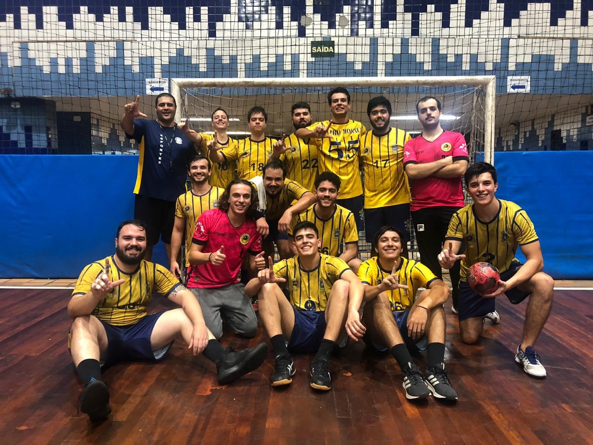
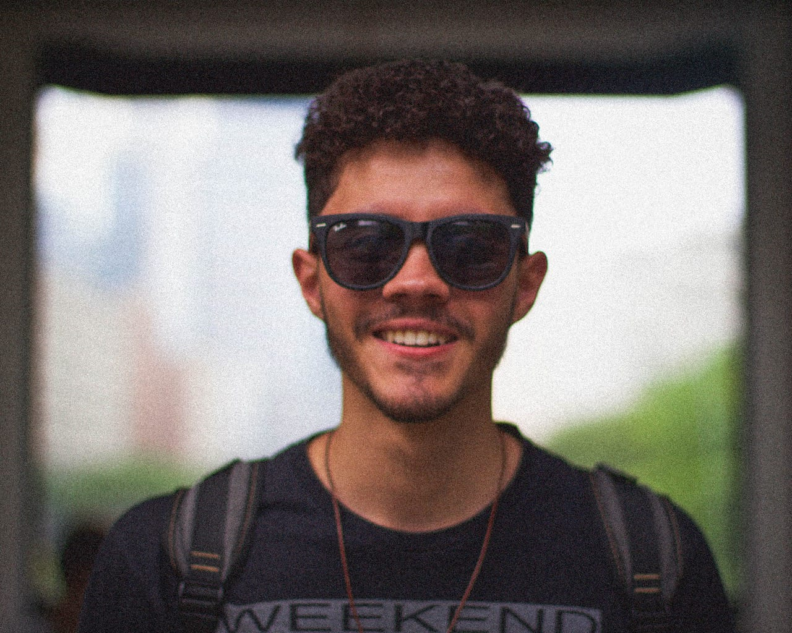

Nos anos de colégio fiz alguns projetos do curso de Comex, no Colégio Visconde de Porto Seguro, e acho que eles foram importantes pra me conhecer, o primeiro projeto importante foi a feira de marketing na qual desenvolvemos um produto, um planejamento estratégico de exportação e as comunicações visuais apresentadas na feira. No processo do projeto me deparei com um lado imaginativo, que com o tempo virou uma necessidade de criar coisas novas.
O segundo projeto foi uma audiência simulada, nesse projeto percebi o como minha mente racionaliza problemas e imagina possíveis cenários que podem ocorrer. Entre as audiências desse ano, meu grupo ganhou o destaque de melhor acusação. O terceiro projeto foi um TCC, que consistiu na apresentação de um modelo de exportação de um item escolhido e as análises fundamentais e que justificassem a escolha, e foi o momento que notei a importância da capacidade de oratória e a diferença que uma boa comunicação faz.
Desde que me formei no colégio tenho cursado administração na PUC-SP, e lá tenho buscado desenvolver, além de alguns conhecimentos técnicos, algumas soft skills. Faço isso optando por matérias de conhecimentos diversos que me permitem ver o funcionamento de um sistema como um todo e avaliar as possibilidades ou também matérias que me auxiliam no autoconhecimento. Alguns exemplos são as matérias de negociação, de revolução 4.0, de estratégia internacional ou até de fusões e aquisições. E esses conhecimentos continuarei buscando mesmo após me formar no meio de 2021.
Histórico Profissional
Profissionalmente eu tive uma breve experiência, de um mês, durante o colégio. Um estágio não remunerado em uma trading chamada "Target Trading". Nesse período me familiarizei com os documentos necessários na realização de negócios internacionais e foi meu primeiro contato com o ambiente corporativo.
Meu segundo passo profissional foi entrar como estagiário na Gol Linhas Aéreas, após um ano fui efetivado na mesma área, Serviço de Bordo. A área me acolheu e lá venho aprendendo sempre algo novo, mesmo que não diretamente relacionado com a minha função.
Em Serviço de Bordo aprimorei habilidades técnicas como uso de pacote office, e consequentemente a minha análise de dados, até porque o importante é entender o que você pode fazer com as informações que se tem. Mas também aprendi sobre modelos ágeis como Scrum, e também sobre soft skills, como comunicação assertiva, buscando atender as necessidades dos diversos clientes (internos e externos), ou como compreender seu mindset e o impacto disso.
O setor que estou inserido é muito dinâmico e é necessário estar sempre se reinventando e aprendendo algo novo, logo tenho a oportunidade de fazer algo que gosto, aprender coisas novas pra criar algo diferente, como por exemplo esse site que é a primeira coisa que programo. Essa vontade de programar surgiu da necessidade que identifiquei de entender como funciona o mundo de uma das principais áreas parceiras que é T.I., além de ser uma área que cada vez mais se torna um diferencial em todos os setores.
Habilidades
Acredito que minha maior habilidade seja entender sistemas complexos, ou seja, que tenham diversos fatores envolvidos, e avaliar esses sistemas na busca de falhas ou possibilidades de melhorias, e quando localizado usar os conhecimentos disponíveis, e se necessário, buscar novos, para propor opções com o objetivo de tomar a melhor decisão possível.
Além disso tenho facilidade com a comunicação, acredito que a minha capacidade de me colocar no lugar do outro, entendendo que as crenças e valores são subjetivos, facilite isso, pois é possível adequar a linguagem e a abordagem facilitando para os receptores, garantindo que eu passe a mensagem do jeito correto e garantindo a boa compreensão, e com isso evitando futuros problemas.
Há também as habilidades mais técnicas, mas que considero mais fáceis de se aprender (até porque quanto mais se aprende, mais fácil é aprender), tenho conhecimento de pacote office, como criação de macros, elaboração de apresentações e dashboards. Consigo me comunicar em inglês e espanhol além de noções gerais de alemão, com planos de retomar após o final da faculdade. E atualmente me aventurando em cursos no tempo que o TCC da faculdade permite, como o de programação que me ajudou a fazer esse site, ou de psicologia analítica, ou até mesmo de meditação e autoconhecimento.
Hobbies

Meus principais hobbies sempre estiveram muito ligados à atividade física, desde pequeno jogava muito futebol e fazia karatê, cheguei a participar de campeonatos de ambos. Já um pouco mais velho comecei a andar de skate, o que me fez conhecer mais São Paulo por andar por aí buscando lugares para andar. Em algum momento voltei à luta, fiz Muay Thai por um período e depois passei a fazer musculação no colégio e também participei de duatlos lá. Atualmente jogo Handebol, comecei assim que entrei na faculdade e continuo parte dessa família representando a FEA-PUC, como exposto na foto logo aí em cima.
No período que andava de skate criei o hábito de andar por São Paulo e conhecer essa cidade, então "bater perna" também é algo que considero um hobby, observar a cidade, conhecer pessoas, lugares e vistas novas. Cada vez gosto mais dessa cidade e entendo o porquê me sinto acolhido pela selva de concreto. Sentar em um café qualquer ouvindo música e com meu caderno de desenho é uma experiência única.

A música também é um hobby, mas apenas ouvi-la 24/7. Ela se junta aos passatempos de escrever e/ou desenhar uns rabiscos, que eu pessoalmente considero só expressões da necessidade criar coisas, mesmo que não "úteis". Quando não tenho o que colocar pra fora procuro ler e absorver coisas novas, principalmente filosofia e sociologia, são áreas que tenho um carinho especial, não atoa participei algumas vezes das olimpíadas de filosofia, que consiste em debates sobre temas abertos tendo como ponto de partida algum texto normalmente famoso.
Obrigado pela visita na minha página acredito que, em resumo, esse seja eu, se quiser saber mais me chama, sempre disposto a conversar e ver novas visões de mundo.